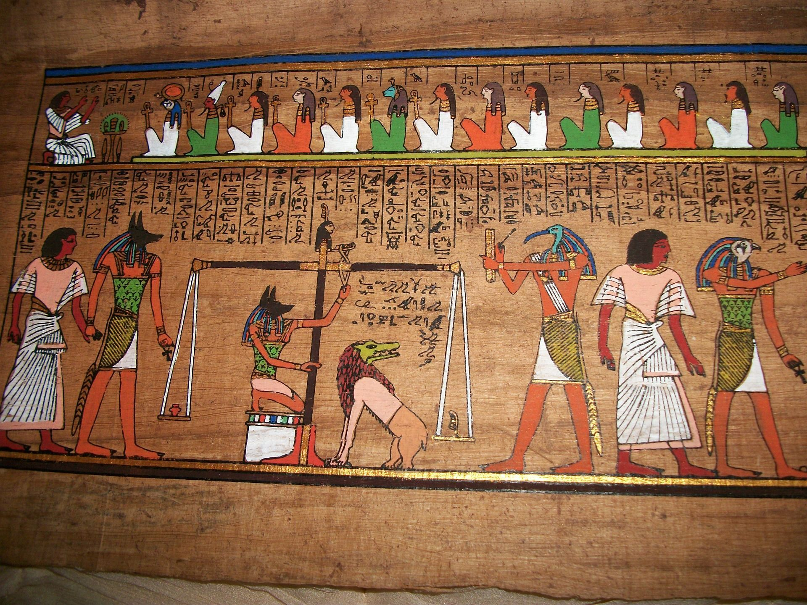
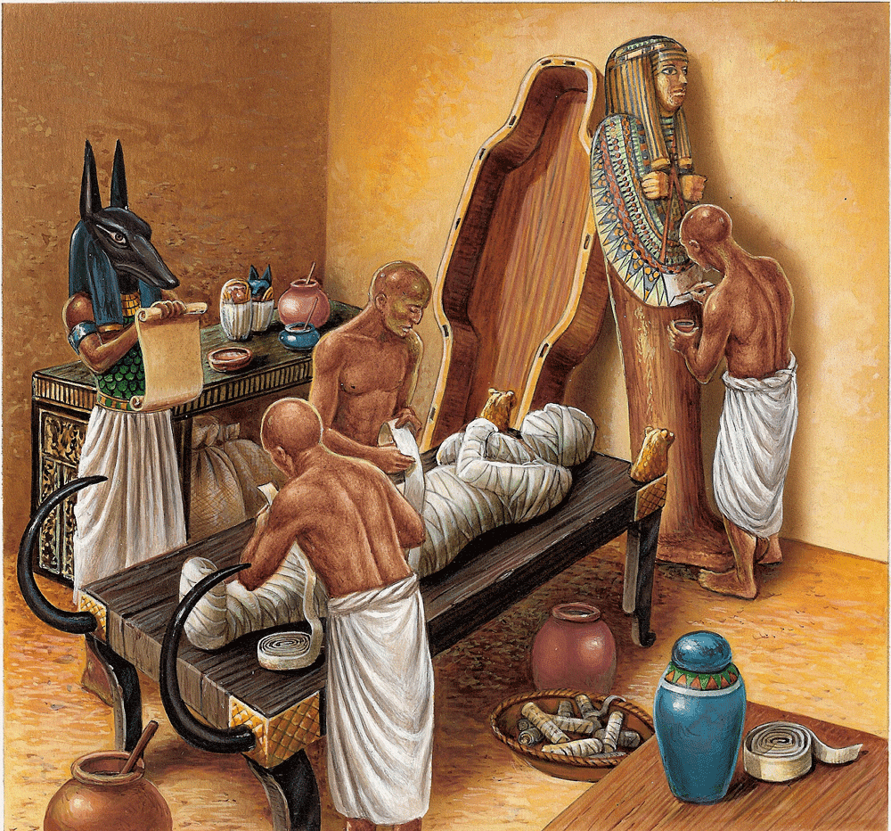
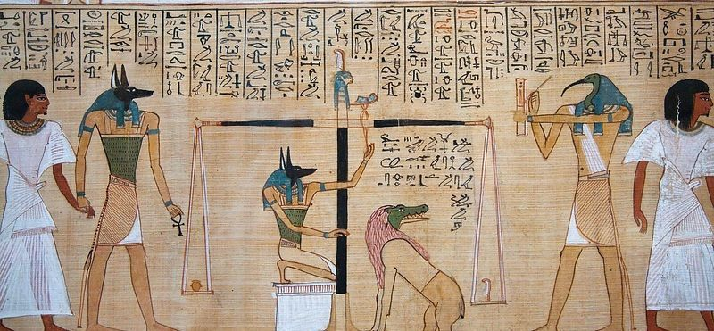
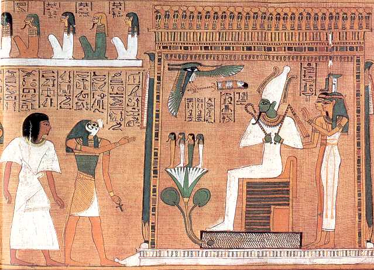

It is important to know the Osirian myth beforehand in order to understand the importance of
the cult of the dead. Death in ancient Egypt is a transition and not an end, that is, death represents
a passage to something else. As a stage, death is surrounded by a number of rites, which
are directly part of the Osirian myth. Among the ancient Egyptians, ceremonies and
beliefs related to death were an important part of their lives.
The Egyptians considered that after death, the soul of the deceased could be reborn and access the "kingdom of the dead".
and at eternal rest. After death, different steps can be traced to prepare the deceased for the afterlife and
the myth of death can be broken down into two parts:
- the first step which is the journey of the deceased to the afterlife with the embalming ceremony
- the second stage, which corresponds to the judgment of the deceased by the god Osiris when he reaches the afterlife
in order to perhaps access eternal rest.
Embalming is a ritual that takes place on earth and is performed by priests.
For the Egyptians, man has five elements: the djet, i. e. the body envelope,
the shout the shadow, the ren the name, the ba that could be translated by the soul, and the ka, which is a
some kind of vital substance. The ka is what makes man strictly speaking, is born at the same time as
man and survives him after death. It is the ka, but also the soul of the deceased, the ba, that will continue
the journey to the afterlife. So that the ka and ba can leave the deceased's body shell and
to join the kingdom of the dead, the object or body must be preserved. To do this, the priests
perform an embalming ceremony to transform the deceased's body into a mummy. Mummification
purifies the body and protects it from rot. The goal is to bring the body closer to the deceased person
of that of Osiris, who was also mummified in order to remain eternal. 
The duration of mummification is seventy days. It is operated by the utyu, priests in charge of
mummification. The body is first washed, then dried in the sun and coated with oils and beeswax
which has antibacterial properties that promote the preservation of the body. It should be noted that the
conservation of bodies in Egypt is naturally facilitated by sandy soils and dry climate.
Some organs, such as the lungs, stomach, intestines and liver are removed and placed in
canopic vases bearing the effigy of Horus' four sons. The heart, seat of thought and feelings,
is usually left in its place. As for the brain, it is sucked through the nose with a hook.
The brain has no value in the Egyptian imagination, since it is the heart that is the seat of the
thought, which is probably why it is removed and sometimes replaced by beeswax. Once in a while
with all the viscera removed, the body is immersed in natron (a chemical substance found
naturally in salt lakes in Egypt) which has the particularity of drying out
strongly the body by removing the fats present, which combined with the dry climate of Egypt, promotes
conservation. However, the body is deformed by the natron: it is flattened. To bring it back into shape,
tissue is placed inside the body and eyes. Once the body is ready, the utyu proceed to the
bandages. Amulets are placed on the deceased's body, which is then covered with strips
of linen, brought by the family. A funeral mask completes everything for the richest. The mummy is
placed in a coffin, then buried according to the social rank and wealth of the dead.
If the body is not embalmed, the djet becomes the khat after death and cannot access eternal rest.
The embalming ritual was created by Isis, assisted by Anubis, when she reconstituted her husband's body
Osiris in order to bring it back to life. The statues and offerings present beside the deceased in his sarcophagus
allow us to accompany him on his way to the judgment of the soul.
Once the djet has been prepared and preserved, the dead can begin his journey to the afterlife. The ba, the soul of the deceased,
and its ka, its vital substance, leaves the body in which they can return since the djet is preserved
in order to join the kingdom of the dead. However, the kingdom of the dead is not open to all. The deceased
must go through many steps. To each of them, he must recite a formula, written in the Book
of the dead. This book is composed of several papyrus rolls and traces the deceased's journey to
the afterlife. The legend attributes its writing to the god Thoth, who is called to cut off the heads of those who
are opposed to the deceased's advance into the kingdom of the dead. The most famous episode of the Book of the Dead,
from by its fundamental character, is that of weighing the soul.

The weighing of the soul or psychostasy consists in putting the heart of the deceased guided by Anubis during his passage
between life and death on a scale and on the other side a feather (representing the goddess Ma'at); if the heart
is lighter (which means that the heart is not stained with sin), the deceased can join the kingdom
of the dead where Osiris awaits him, he can lead a new life in the kingdom of the dead. Otherwise, he'll be devoured.
by a monster (most of the time symbolized by the goddess Amemet who has a crocodile head, a lion's body
Horus presides over the judgment of the soul and
Thot notes the result. It is the heart that is weighed in order to judge the soul because the heart is considered as
incapable of lying: all the faults committed by the deceased during his life are therefore memorized in his heart. 
Osiris only became god of the kingdom of the dead after successfully passing the test of weighing the soul. The deceased
wanted to identify with Osiris to reach the kingdom of the dead and rest in peace.